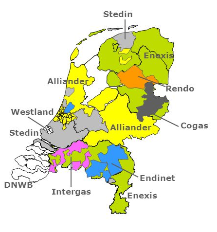

Gasnetwerk
Onderstaande kaartlagen geven informatie over het gasnetwerk in Nederland. Onderaan deze pagina staan links met meer informatie.
Netbeheerdergebieden
De verzorgingsgebieden van de verschillende netbeheerders voor gas worden in deze kaartlaag weergegeven. Dit is open data van de netbeheerders.

Enexis open data
Enexis heeft assets in haar eigen verzorgingsgebied als open data beschikbaar gesteld. Het gaat hierbij om de volgende assets:
- Gasstations
- Gasleidingen
- Gasaansluitleidingen
- Gasaansluitingen
Warmtenetten
Deze kaartlaag laat zien waar de huidige warmtenetten liggen en komt van de Rijksdienst voor Ondernemend Nederland (RVO).
Meer informatie